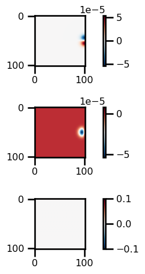
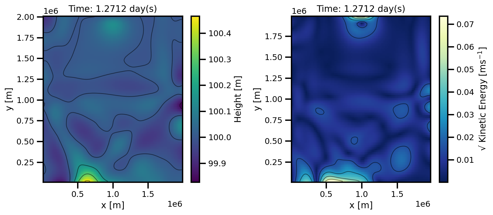

Linear Shallow Water Equations (Field API)#
import autoroot
import jax
import jax.numpy as jnp
import numpy as np
import equinox as eqx
import kernex as kex
import finitediffx as fdx
import diffrax as dfx
import xarray as xr
import matplotlib.pyplot as plt
import seaborn as sns
import typing as tp
from tqdm.notebook import tqdm, trange
from jaxtyping import Float, Array, PyTree, ArrayLike
import pandas as pd
from jaxsw._src.domain.base import Domain
from jaxsw._src.fields.base import Field
from jaxsw._src.models.pde import DynamicalSystem
from jaxsw._src.domain.time import TimeDomain
from jaxsw._src.operators.functional import grid as F_grid
sns.reset_defaults()
sns.set_context(context="talk", font_scale=0.7)
jax.config.update("jax_enable_x64", True)
%matplotlib inline
%load_ext autoreload
%autoreload 2
Formulation#
(55)#\[\begin{split}
\begin{aligned}
\frac{\partial h}{\partial t} &+ H
\left(\frac{\partial u}{\partial x} + \frac{\partial v}{\partial y} \right) = 0 \\
\frac{\partial u}{\partial t} &- fv =
- g \frac{\partial h}{\partial x}
- \kappa u \\
\frac{\partial v}{\partial t} &+ fu =
- g \frac{\partial h}{\partial y}
- \kappa v
\end{aligned}
\end{split}\]
Domain#
dx = dy = 20e3
Lx = 100 * dx
Ly = 101 * dy
ncols = 5
# initialize the Q domain
h_domain = Domain(xmin=(0, 0), xmax=(Lx, Ly), dx=(dx, dy))
# values = q_domain.grid[..., 0]
# q = Field(values, q_domain)
# initialize the u-velocity domain
u_domain = Domain(xmin=(0, 0), xmax=(Lx, Ly), dx=(dx, dy), stagger=("right", None))
# values = u_domain.grid[..., 0]
# u = Field(values, u_domain)
# initialize the v-velocity domain
v_domain = Domain(xmin=(0, 0), xmax=(Lx, Ly), dx=(dx, dy), stagger=(None, "right"))
print(f"Nx: {h_domain.Nx}")
print(f"Lx: {h_domain.Lx}")
print(f"dx: {h_domain.dx}")
print(f"Size: {h_domain.size}")
print(f"nDims: {h_domain.ndim}")
print(f"Grid Size: {h_domain.grid.shape}")
print(f"Cell Volume: {h_domain.cell_volume:_}")
Nx: (101, 102)
Lx: (2000000.0, 2020000.0)
dx: (20000.0, 20000.0)
Size: (101, 102)
nDims: 2
Grid Size: (101, 102, 2)
Cell Volume: 400_000_000.0
Initial Condition#
# grid setup
x, y = (
np.arange(n_x) * dx,
np.arange(n_y) * dy
)
Y, X = np.meshgrid(y, x, indexing='ij')
# initial conditions
h0 = depth + 1.0 * np.exp(
- (X - x[n_x // 2]) ** 2 / rossby_radius ** 2
- (Y - y[n_y - 2]) ** 2 / rossby_radius ** 2
)
u0 = np.zeros_like(h0)
v0 = np.zeros_like(h0)
from jaxtyping import Array
class State(tp.NamedTuple):
u: Field
v: Field
h: Field
@classmethod
def init_state(cls, params):
h = Field(init_h0(h_domain, params), h_domain)
v = Field(jnp.zeros_like(h.values), v_domain)
u = Field(jnp.zeros_like(h.values), u_domain)
return cls(u=u, v=v, h=h)
class Params(tp.NamedTuple):
depth: float
gravity: float
coriolis: float # of ARRAY
@property
def rossby_radius(self):
return np.sqrt(self.gravity * self.depth) / self.coriolis
def init_h0(domain, params):
"""A LOT of work for a lil Gauss bump!"""
X = domain.grid[..., 0]
Y = domain.grid[..., 1]
x_center = domain.coords[0][domain.Nx[0] // 2]
y_center = domain.coords[1][domain.Nx[1] - 2]
h0 = params.depth + 1.0 * np.exp(
-((X - x_center) ** 2) / params.rossby_radius**2
- (Y - y_center) ** 2 / params.rossby_radius**2
)
return jnp.asarray(h0)
params = Params(depth=100.0, gravity=9.81, coriolis=2e-4)
state_init = State.init_state(params)
state_init
State(u=Field(
values=f64[101,102],
domain=Domain(
xmin=(10000.0, 0.0),
xmax=(2010000.0, 2020000.0),
dx=(20000.0, 20000.0)
)
), v=Field(
values=f64[101,102],
domain=Domain(
xmin=(0.0, 10000.0),
xmax=(2000000.0, 2030000.0),
dx=(20000.0, 20000.0)
)
), h=Field(
values=f64[101,102],
domain=Domain(
xmin=(0.0, 0.0),
xmax=(2000000.0, 2020000.0),
dx=(20000.0, 20000.0)
)
))
plt.imshow(state_init.h.values, cmap="RdBu_r")
<matplotlib.image.AxesImage at 0x1539b09d0>
Boundary Conditions#
from jaxsw._src.operators.custom import FuncOperator
FuncOperator??
Init signature: FuncOperator(*args, **kwargs)
Docstring: FuncOperator(*args, **kwargs)
Source:
class FuncOperator(eqx.Module):
f: Callable = eqx.static_field()
def __init__(self, f):
self.f = f
def __call__(self, u: Field) -> Field:
u = eqx.tree_at(lambda x: x.values, u, self.f(u.values))
return u
File: ~/code_projects/jaxsw/jaxsw/_src/operators/custom.py
Type: _ModuleMeta
Subclasses:
def bc_u(u: Array):
u = u.at[-2, :].set(jnp.asarray(0.0))
return u
def bc_v(v: Array):
v = v.at[:, -2].set(jnp.asarray(0.0))
return v
u_updated = bc_u(state_init.u.values)
u_updated = Field(u_updated, u_domain)
u_updated.values
Array([[0., 0., 0., ..., 0., 0., 0.],
[0., 0., 0., ..., 0., 0., 0.],
[0., 0., 0., ..., 0., 0., 0.],
...,
[0., 0., 0., ..., 0., 0., 0.],
[0., 0., 0., ..., 0., 0., 0.],
[0., 0., 0., ..., 0., 0., 0.]], dtype=float64)
# u_updated = bc_u(state_init.u.values)
# state_updated = eqx.tree_at(lambda x: x.u.values, state_init, u_updated)
# state_updated
bc_u_op = FuncOperator(bc_u)
bc_v_op = FuncOperator(bc_v)
u_bc = bc_u_op(state_init.u)
u_bc
Field(
values=f64[101,102],
domain=Domain(
xmin=(10000.0, 0.0),
xmax=(2010000.0, 2020000.0),
dx=(20000.0, 20000.0)
)
)
Equation of Motion#
class LinearShallowWater2D(DynamicalSystem):
@staticmethod
def equation_of_motion(t: float, state: State, args):
"""2D Linear Shallow Water Equations
Equation:
∂h/∂t + H (∂u/∂x + ∂v/∂y) = 0
∂u/∂t - fv = - g ∂h/∂x - ku
∂v/∂t + fu = - g ∂h/∂y - kv
"""
# unpack state
u, v, h = state.u, state.v, state.h
# unpack params
depth, coriolis, gravity = (
args.depth,
args.coriolis,
args.gravity,
)
# # Apply Boundary Conditions
# u = bc_fn(u)
# v = bc_fn(v)
# u = u.at[-2, :].set(jnp.asarray(0.0))
# v = v.at[:, -2].set(jnp.asarray(0.0))
# u_updated = bc_u(u.values)
# u = eqx.tree_at(lambda x: x.values,u, u_updated)
# v_updated = bc_v(v.values)
# v = eqx.tree_at(lambda x: x.values,v, v_updated)
# u = state.u
u = bc_u_op(u)
v = bc_v_op(v)
################
# H COMPONENT
# ∂h/∂t = - H (∂u/∂x + ∂v/∂y)
################
h_rhs = jnp.zeros_like(h.values)
du_dx = fdx.difference(
u.values, axis=0, accuracy=1, method="backward", step_size=u.domain.dx[0]
)
dv_dy = fdx.difference(
v.values, axis=1, accuracy=1, method="backward", step_size=v.domain.dx[1]
)
h_rhs = h_rhs.at[1:-1, 1:-1].set(
-depth * (du_dx[1:-1, 1:-1] + dv_dy[1:-1, 1:-1])
)
################
# U COMPONENT
# ∂u/∂t = fv - g ∂h/∂x
################
u_rhs = jnp.zeros_like(u.values)
# v_avg = F_grid.center_average_2D(v.values, padding="valid")[1:, :-1]
# v_avg = v_avg * coriolis
# print(v.values.shape)
v_avg = F_grid.grid_operator(v, ("inner", "inner"))
# print(v_avg.values.shape)
v_avg = v_avg.values[1:, :-1] * coriolis
# print(v_avg.shape)
dh_dx = fdx.difference(
h.values, axis=0, accuracy=1, method="forward", step_size=h.domain.dx[0]
)
dh_dx *= -gravity
u_rhs = u_rhs.at[1:-1, 1:-1].set(v_avg + dh_dx[1:-1, 1:-1])
################
# V COMPONENT
# ∂v/∂t = - fu - g ∂h/∂y
###############
v_rhs = jnp.zeros_like(v.values)
# u_avg = F_grid.center_average_2D(u.values, padding="valid")[:-1, 1:]
# u_avg *= -coriolis
u_avg = F_grid.grid_operator(u, ("inner", "inner"))
# print(v_avg.values.shape)
u_avg = -u_avg.values[:-1, 1:] * coriolis
dh_dy = fdx.difference(
h.values, axis=1, accuracy=1, method="forward", step_size=h.domain.dx[1]
)
dh_dy *= -gravity
v_rhs = v_rhs.at[1:-1, 1:-1].set(u_avg + dh_dy[1:-1, 1:-1])
# update state
state = eqx.tree_at(lambda x: x.u.values, state, u_rhs)
state = eqx.tree_at(lambda x: x.v.values, state, v_rhs)
state = eqx.tree_at(lambda x: x.h.values, state, h_rhs)
return state
state_update = LinearShallowWater2D.equation_of_motion(0, state_init, params)
fig, ax = plt.subplots(nrows=3)
pts = ax[0].imshow(state_update.u.values, cmap="RdBu_r")
plt.colorbar(pts)
pts = ax[1].imshow(state_update.v.values, cmap="RdBu_r")
plt.colorbar(pts)
pts = ax[2].imshow(state_update.h.values, cmap="RdBu_r")
plt.colorbar(pts)
plt.tight_layout()

Time Stepping#
# TEMPORAL DISCRETIZATION
# initialize temporal domain
dt = 0.25 * state_init.h.domain.dx[0] / np.sqrt(params.gravity * params.depth)
print(f"Step Size (dt): {dt:.4e}")
tmin = 0.0
tmax = pd.to_timedelta(5, unit="days").total_seconds()
num_save = 60
Step Size (dt): 1.5964e+02
import pandas as pd
t_domain = TimeDomain(tmin=tmin, tmax=tmax, dt=dt)
ts = jnp.linspace(tmin, tmax, num_save)
saveat = dfx.SaveAt(ts=ts)
# DYNAMICAL SYSTEM
dyn_model = LinearShallowWater2D(t_domain=t_domain, saveat=saveat)
Integration#
# Euler, Constant StepSize
solver = dfx.Dopri5()
# Tolerances
stepsize_controller = dfx.ConstantStepSize()
# rtol = 1e-3
# atol = 1e-4
# stepsize_controller = dfx.PIDController(
# pcoeff=0.3, icoeff=0.4, rtol=rtol, atol=atol, dtmax=dt
# )
# SPATIAL DISCRETIZATION
params_init = Params(depth=100.0, gravity=9.81, coriolis=2e-4)
state_init = State.init_state(params_init)
# integration
sol = dfx.diffeqsolve(
terms=dfx.ODETerm(dyn_model.equation_of_motion),
solver=solver,
t0=ts.min(),
t1=ts.max(),
dt0=dt,
y0=state_init,
saveat=saveat,
args=params_init,
stepsize_controller=stepsize_controller,
max_steps=None,
)
sol.ys
State(u=Field(
values=f64[60,101,102],
domain=Domain(
xmin=(10000.0, 0.0),
xmax=(2010000.0, 2020000.0),
dx=(20000.0, 20000.0)
)
), v=Field(
values=f64[60,101,102],
domain=Domain(
xmin=(0.0, 10000.0),
xmax=(2000000.0, 2030000.0),
dx=(20000.0, 20000.0)
)
), h=Field(
values=f64[60,101,102],
domain=Domain(
xmin=(0.0, 0.0),
xmax=(2000000.0, 2020000.0),
dx=(20000.0, 20000.0)
)
))
for ivar in sol.ys:
# print(ivar[-1])
fig, ax = plt.subplots(figsize=(12, 8))
pts = ax.imshow(ivar.values[-1][2:-2, 2:-2], cmap="RdBu_r")
plt.colorbar(pts)
plt.tight_layout()
Analysis#
ds_results = xr.Dataset(
data_vars={
"u": (("time", "x", "y"), sol.ys.u.values),
"v": (("time", "x", "y"), sol.ys.v.values),
"h": (("time", "x", "y"), sol.ys.h.values),
},
coords={
"time": (("time"), sol.ts),
"x": (("x"), state_init.h.domain.coords[0]),
"y": (("y"), state_init.h.domain.coords[1]),
},
)
ds_results
<xarray.Dataset>
Dimensions: (time: 60, x: 101, y: 102)
Coordinates:
* time (time) float64 0.0 7.322e+03 1.464e+04 ... 4.247e+05 4.32e+05
* x (x) float64 0.0 2e+04 4e+04 6e+04 ... 1.96e+06 1.98e+06 2e+06
* y (y) float64 0.0 2e+04 4e+04 6e+04 ... 1.98e+06 2e+06 2.02e+06
Data variables:
u (time, x, y) float64 0.0 0.0 0.0 0.0 0.0 ... 0.0 0.0 0.0 0.0 0.0
v (time, x, y) float64 0.0 0.0 0.0 0.0 0.0 ... 0.0 0.0 0.0 0.0 0.0
h (time, x, y) float64 100.0 100.0 100.0 100.0 ... 100.0 100.0 100.0from xmovie import Movie
from pathlib import Path
from matplotlib import ticker
def custom_plot_p_layers(ds, fig, tt, *args, **kwargs):
sub = ds.isel(time=tt)
time = sub.v.time.values / 86400
xlim = kwargs.pop("xlim", None)
ylim = kwargs.pop("ylim", None)
vmin = kwargs.pop("vmin", sub.h.isel(x=slice(1, -1), y=slice(1, -1)).min())
vmax = kwargs.pop("vmax", sub.h.isel(x=slice(1, -1), y=slice(1, -1)).max())
cmap = kwargs.pop("cmap", "viridis")
fig.set_size_inches(15, 4.5)
ax = fig.subplots(
ncols=3,
)
# HEIGHT
cbar_kwargs = {"label": "Height [m]"}
pts = sub.h.isel(x=slice(1, -1), y=slice(1, -1)).plot.pcolormesh(
ax=ax[0],
cmap="viridis",
add_colorbar=True,
vmin=vmin,
vmax=vmax,
cbar_kwargs=cbar_kwargs,
# **kwargs
)
loc = ticker.MaxNLocator(6)
levels = loc.tick_values(vmin, vmax)
sub.h.isel(x=slice(1, -1), y=slice(1, -1)).plot.contour(
ax=ax[0],
levels=levels,
vmin=vmin,
vmax=vmax,
alpha=0.5,
linewidths=1,
cmap="black",
linestyles=np.where(levels >= 0, "-", "--"),
)
# ax.set_aspect('equal')
pts = ax[0].set(xlabel="x [m]", ylabel="y [m]", title=f"Time: {time:.4f} day(s)")
# U-VELOCITY
cbar_kwargs = {"label": "U-Velocity [ms$^{-1}$]"}
vmin = sub.u.isel(x=slice(1, -2), y=slice(1, -1)).min()
vmax = sub.u.isel(x=slice(1, -2), y=slice(1, -1)).max()
pts = sub.u.isel(x=slice(1, -2), y=slice(1, -1)).plot.pcolormesh(
ax=ax[1],
cmap="coolwarm",
add_colorbar=True,
vmin=vmin,
vmax=vmax,
cbar_kwargs=cbar_kwargs
# **kwargs
)
loc = ticker.MaxNLocator(6)
levels = loc.tick_values(vmin, vmax)
sub.u.isel(x=slice(1, -2), y=slice(1, -1)).plot.contour(
ax=ax[1],
levels=levels,
vmin=vmin,
vmax=vmax,
alpha=0.5,
linewidths=1,
cmap="black",
linestyles=np.where(levels >= 0, "-", "--"),
)
# ax.set_aspect('equal')
pts = ax[1].set(xlabel="x [m]", ylabel="y [m]", title=f"Time: {time:.4f} day(s)")
# V-VELOCITY
cbar_kwargs = {"label": "V-Velocity [ms$^{-1}$]"}
vmin = sub.v.isel(x=slice(1, -1), y=slice(1, -2)).min()
vmax = sub.v.isel(x=slice(1, -1), y=slice(1, -2)).max()
pts = sub.v.isel(x=slice(1, -1), y=slice(1, -2)).plot.pcolormesh(
ax=ax[2],
cmap="coolwarm",
add_colorbar=True,
vmin=vmin,
vmax=vmax,
cbar_kwargs=cbar_kwargs
# **kwargs
)
loc = ticker.MaxNLocator(6)
levels = loc.tick_values(vmin, vmax)
sub.v.isel(x=slice(1, -1), y=slice(1, -2)).plot.contour(
ax=ax[2],
levels=levels,
vmin=vmin,
vmax=vmax,
alpha=0.5,
linewidths=1,
cmap="black",
linestyles=np.where(levels >= 0, "-", "--"),
)
# ax.set_aspect('equal')
pts = ax[2].set(xlabel="x [m]", ylabel="y [m]", title=f"Time: {time:.4f} day(s)")
plt.tight_layout()
return None, None
from xmovie import Movie
from pathlib import Path
from matplotlib import ticker
def custom_plot_h_ke_layers(ds, fig, tt, *args, **kwargs):
sub = ds.isel(time=tt)
time = sub.v.time.values / 86400
xlim = kwargs.pop("xlim", None)
ylim = kwargs.pop("ylim", None)
vmin = kwargs.pop("vmin", sub.h.isel(x=slice(1, -1), y=slice(1, -1)).min())
vmax = kwargs.pop("vmax", sub.h.isel(x=slice(1, -1), y=slice(1, -1)).max())
cmap = kwargs.pop("cmap", "viridis")
fig.set_size_inches(10, 4.5)
ax = fig.subplots(
ncols=2,
)
# HEIGHT
cbar_kwargs = {"label": "Height [m]"}
pts = sub.h.isel(x=slice(1, -1), y=slice(1, -1)).plot.pcolormesh(
ax=ax[0],
cmap="viridis",
add_colorbar=True,
vmin=vmin,
vmax=vmax,
cbar_kwargs=cbar_kwargs,
# **kwargs
)
loc = ticker.MaxNLocator(6)
levels = loc.tick_values(vmin, vmax)
sub.h.isel(x=slice(1, -1), y=slice(1, -1)).plot.contour(
ax=ax[0],
levels=levels,
vmin=vmin,
vmax=vmax,
alpha=0.5,
linewidths=1,
cmap="black",
linestyles=np.where(levels >= 0, "-", "--"),
)
# ax.set_aspect('equal')
pts = ax[0].set(xlabel="x [m]", ylabel="y [m]", title=f"Time: {time:.4f} day(s)")
# U-VELOCITY
sub["ke"] = np.sqrt(0.5 * (sub.u**2 + sub.v**2))
cbar_kwargs = {"label": "√ Kinetic Energy [ms$^{-1}$]"}
vmin = sub.ke.isel(x=slice(1, -2), y=slice(1, -2)).min()
vmax = sub.ke.isel(x=slice(1, -2), y=slice(1, -2)).max()
pts = sub.ke.isel(x=slice(1, -2), y=slice(1, -2)).plot.pcolormesh(
ax=ax[1],
cmap="YlGnBu_r",
add_colorbar=True,
vmin=vmin,
vmax=vmax,
cbar_kwargs=cbar_kwargs
# **kwargs
)
loc = ticker.MaxNLocator(6)
levels = loc.tick_values(vmin, vmax)
sub.ke.isel(x=slice(1, -2), y=slice(1, -2)).plot.contour(
ax=ax[1],
levels=levels,
vmin=vmin,
vmax=vmax,
alpha=0.5,
linewidths=1,
cmap="black",
linestyles=np.where(levels >= 0, "-", "--"),
)
# ax.set_aspect('equal')
pts = ax[1].set(xlabel="x [m]", ylabel="y [m]", title=f"Time: {time:.4f} day(s)")
plt.tight_layout()
return None, None
from pathlib import Path
def create_movie(
var,
name,
plotfunc=custom_plot_p_layers,
framedim: str = "steps",
file_path=None,
**kwargs,
):
if file_path is not None:
file_name = Path(file_path).joinpath(f"movie_{name}.gif")
else:
file_name = Path(f"./movie_{name}.gif")
mov = Movie(
var, plotfunc=plotfunc, framedim=framedim, **kwargs, dpi=200, input_check=False
)
mov.save(
file_name,
remove_movie=False,
progress=True,
framerate=3,
gif_framerate=3,
overwrite_existing=True,
gif_resolution_factor=0.5,
parallel=False,
)
return None
%matplotlib inline
mov = Movie(
ds_results.transpose("time", "y", "x"),
plotfunc=custom_plot_h_ke_layers,
framedim="time",
input_check=False,
)
mov.preview(15)

create_movie(
ds_results.transpose(
"time", "y", "x"
), # .sel(time=slice("2017-02-01", "2017-03-01")),
name="swe_linear",
plotfunc=custom_plot_h_ke_layers,
file_path="./",
framedim="time",
cmap="viridis",
robust=True,
)
Movie created at movie_swe_linear.mp4
GIF created at movie_swe_linear.gif